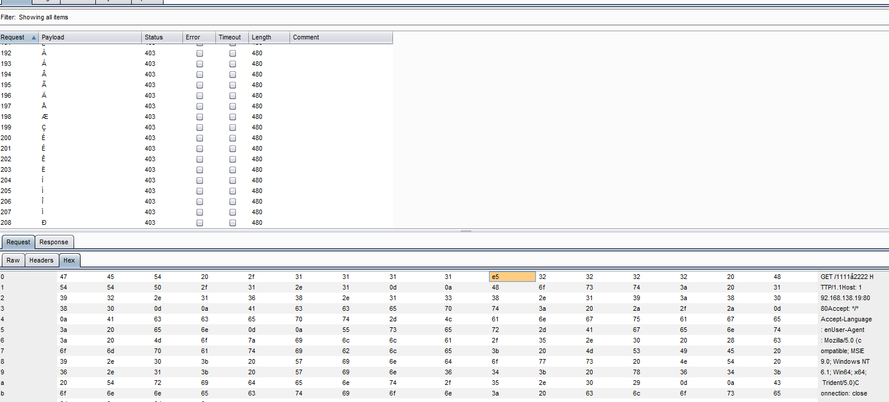
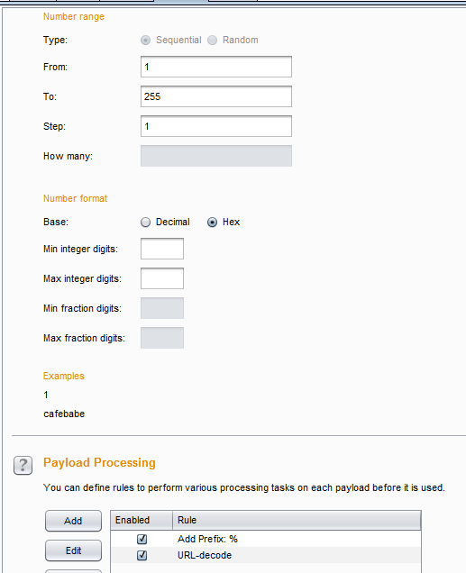

使用burpsuite来进行fuzz
简述
我们在进行测试时经常会用fuzz来进行bypass探测，探测哪些特殊字符串可以使用
c4bbage@dobest1:/opt/# ascii
Usage: ascii [-dxohv] [-t] [char-alias...]
-t = one-line output -d = Decimal table -o = octal table -x = hex table
-h = This help screen -v = version information
Prints all aliases of an ASCII character. Args may be chars, C \-escapes,
English names, ^-escapes, ASCII mnemonics, or numerics in decimal/octal/hex.
Dec Hex Dec Hex Dec Hex Dec Hex Dec Hex Dec Hex Dec Hex Dec Hex
0 00 NUL 16 10 DLE 32 20 48 30 0 64 40 @ 80 50 P 96 60 ` 112 70 p
1 01 SOH 17 11 DC1 33 21 ! 49 31 1 65 41 A 81 51 Q 97 61 a 113 71 q
2 02 STX 18 12 DC2 34 22 " 50 32 2 66 42 B 82 52 R 98 62 b 114 72 r
3 03 ETX 19 13 DC3 35 23 # 51 33 3 67 43 C 83 53 S 99 63 c 115 73 s
4 04 EOT 20 14 DC4 36 24 $ 52 34 4 68 44 D 84 54 T 100 64 d 116 74 t
5 05 ENQ 21 15 NAK 37 25 % 53 35 5 69 45 E 85 55 U 101 65 e 117 75 u
6 06 ACK 22 16 SYN 38 26 & 54 36 6 70 46 F 86 56 V 102 66 f 118 76 v
7 07 BEL 23 17 ETB 39 27 ' 55 37 7 71 47 G 87 57 W 103 67 g 119 77 w
8 08 BS 24 18 CAN 40 28 ( 56 38 8 72 48 H 88 58 X 104 68 h 120 78 x
9 09 HT 25 19 EM 41 29 ) 57 39 9 73 49 I 89 59 Y 105 69 i 121 79 y
10 0A LF 26 1A SUB 42 2A * 58 3A : 74 4A J 90 5A Z 106 6A j 122 7A z
11 0B VT 27 1B ESC 43 2B + 59 3B ; 75 4B K 91 5B [ 107 6B k 123 7B {
12 0C FF 28 1C FS 44 2C , 60 3C < 76 4C L 92 5C \ 108 6C l 124 7C |
13 0D CR 29 1D GS 45 2D - 61 3D = 77 4D M 93 5D ] 109 6D m 125 7D }
14 0E SO 30 1E RS 46 2E . 62 3E > 78 4E N 94 5E ^ 110 6E n 126 7E ~
15 0F SI 31 1F US 47 2F / 63 3F ? 79 4F O 95 5F _ 111 6F o 127 7F DEL
一般的fuzz脚本
use LWP 5.64;
$browser = LWP::UserAgent->new;
for($i=0;$i<256;$i++)
{
$j=data10to16($i);
print "[+] $i $j ".hex($j)." ".chr($i)."\n"
# do GET/POST fuzz
}
sub data10to16{
my($data)=@_;
my $data16=sprintf("%x",$data);
return $data16;
}
burpsuite 方法
- Payload Sets type Numbers
- Payload Options
- From 1 To 255 Step 1
- Number Format Hex
- Payload Processing: Add Prefix:% URL-decode
图
 
后续
在思考 Illegal Unicode